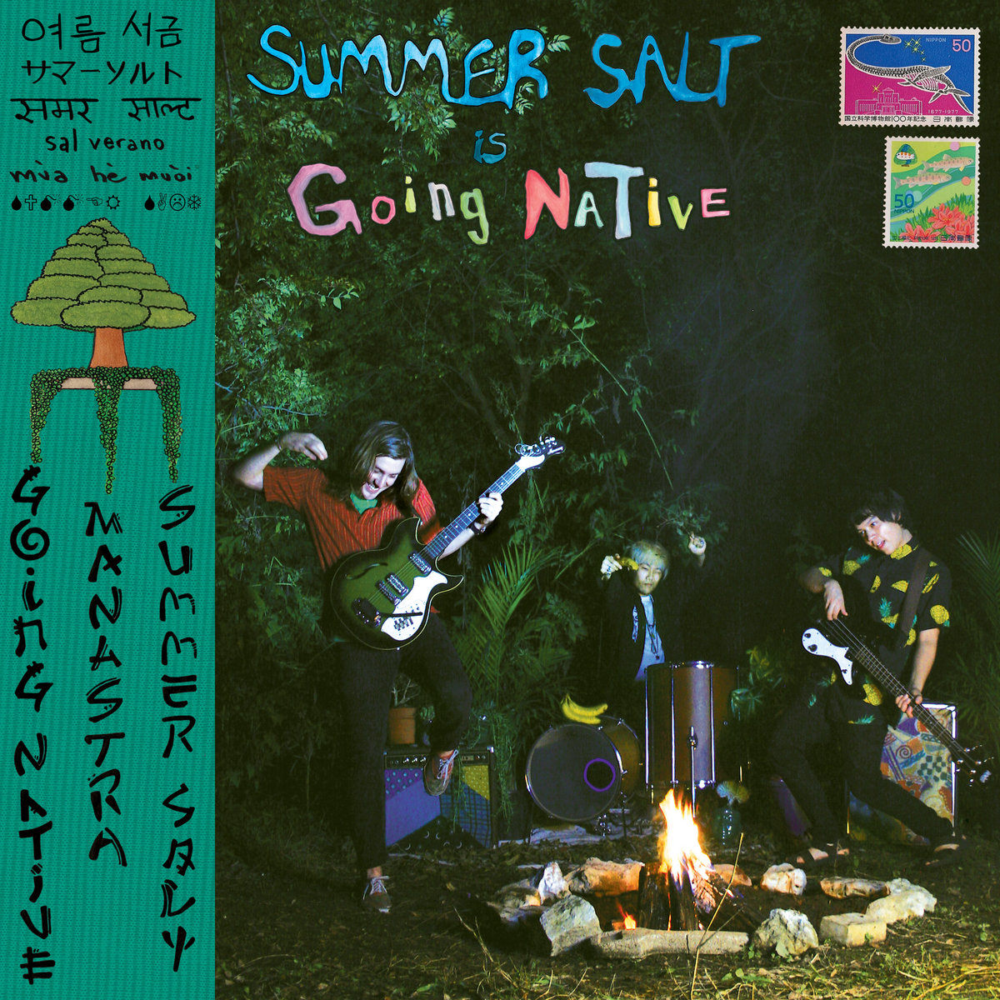
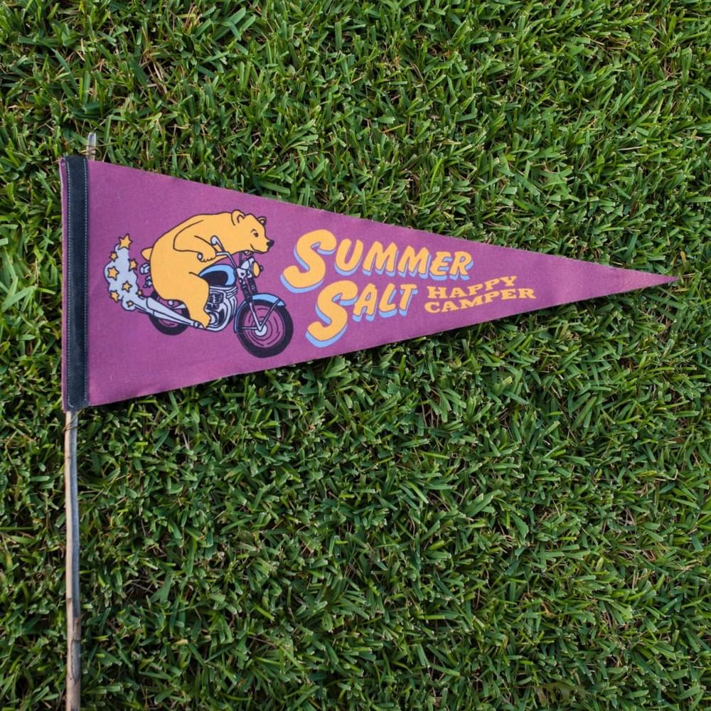

MY FAVORITE BAND
(Click to Direct to Source)
Based in Austin, TX, Summer Salt blends vibrant yet breezy vocal harmony and colorful elements of 1960s pop, Bossa Nova
and jazz. The group was originally formed around the talents of Matthew Terry (vocalist/guitarist) and Eugene Chung
(drummer) during their senior year of high school.
(Summer Salt Official Website, 2020)
ALBUMS
(Click to Direct to Source)
DRIVING TO HAWAII
Driving to Hawaii (2014), contains the essence of a never-ending vacation and is rich in guitar pop and silky harmonies
that is reminiscent of the Beach Boys. The EP features fan favorites such as “Sweet to Me”, “Rockaway”, and of course
their title track, “Driving to Hawaii”, which has iconically represented the basis of all Summer Salt lyrics: trying
to slow down and enjoy the ride of chasing what appears to be an unattainable pipe dream.
(Summer Salt Official Website, 2020)
GOING NATIVE
Their next release, Going Native (2015), was inspired by a trip abroad where Terry began diving into artists such as Joao
Gilberto, Antonio Carlos Jobim, and Gilberto Gil which lead to a new writing direction using Latin elements.
(Summer Salt Official Website, 2020)

(Click to Direct to Source)
(Click to Direct to Source)
SO POLITE
Retro in 2017 usually ends in gimmickry, but this local trio's evenhanded Sixties sweetness delights rather than retreads.
Silky rhymes of summertime ("If I can't get into heaven, I best be revvin' my CJ7") find home amid breezy guitar and bass
grooves. Opening goodie "Candy Wrappers" swims on Matt Terry's pro soprano moments, accenting the group's freshness with
zero nods to Mad Men.
(Austin Chronicle, 2020)
HAPPY CAMPER
Happy Camper (2018) was the band's debut full-length album, featuring songs with
a wildly colorful theme. The album also features a more polished production from
Sub-Pop stalwart Phil Ek (Fleet Foxes, The Shins).
(Summer Salt Official Website, 2020)

(Click to Direct to Source)
(Click to Direct to Source)
HONEYWEED
Sprinkles of jazz flirt with rich harmonies and sweet pop melodies in Summer Salt’s buoyant new EP. Independently
released July 12, 2019, Honeyweed is a six-track jaunt through colorful fields of reflection brimming with warmth and wonder.
(Atwood Magazine, 2020)
AVENUE G
Summer Salt’s latest offering is the four track EP entitled Avenue G. With songs dedicated to the heart of
Austin Texas to where the duo started, Avenue G is a revival EP featuring tracks written when the band was younger.
The duo revisited these songs and brought them back to life with a fresh twist.
(Summer Salt Offical Website, 2020)

(Click to Direct to Source)